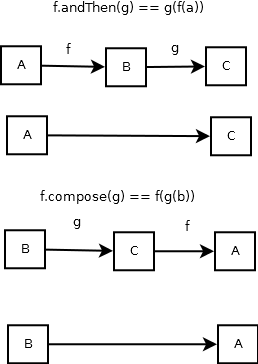
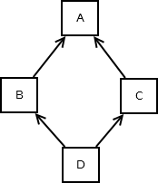

Are Lambdas Great in Java 8?
Created by Mark Perry, @mprry, G+, Blog, LinkedIn, GitHub, maperry78@yahoo.com.au
 |
Topics
- Lambda expressions
- Functional interfaces
- Default methods
- Stream
- Library support
Schedule
Schedule adopted in April 2013- Java 7 launched July 7, 2011
- M8 - Sep 5 - Developer Preview
- M9 - Jan 23 - Final Release Candidate
- GA - Mar 18 - General Availability
http://openjdk.java.net/projects/jdk8/
Java 8 Features
- Lambdas
- java.time (Joda Time)
- Nashorn JavaScript Engine
- Additions to:
- Collections
- Concurrency
- IO and Native IO
- Reflection and annotations
What's a Lambda?
- Greek letter
- Alonzo Church discovered lambda calculus in 30s
- multiply = λ x y . x * y
- true = λ x y . x

Background
- Productivity = Reuse
- Combine smaller units
- Avoid mutation
- Problems:
- Java is object oriented
- Encapsulation and mutation
- Classes are heavyweight
Avoid Mutation
class Cafe {
// mutation
Coffee buyCoffee(CreditCard cc, Payments p) {
Coffee cup = new Coffee();
p.charge(cc, cup.getPrice());
return cup;
}
// referentially transparent
P2<Coffee, Charge> buyCoffee2(CreditCard cc) {
Coffee cup = new Coffee()
return P.p(cup, new Charge(cc, cup.getPrice()));
}
}
Lambda Rationale
- Concise function syntax
- Higher order functions for collections
- Sequential and parallel operations
- Move towards functional programming
Function Brevity
// Java 7
execute(new Runnable(){
public void run() {
processImage(image);
}
});
button.addActionListener(new ActionListener(){
@Override
public void actionPerformed(ActionEvent event) {
setBackground(Color.GREEN);
}
});
// Java 8
execute(() -> processImage(image));
button.addActionListener(e -> setBackground(Color.GREEN));)
Function Brevity
// Sort strings by length, Java 7
Arrays.sort(array, new Comparator<String>() {
@Override
public int compare(String s1, String, s2) {
return s1.length() - s2.length();
}
}
// Java 8
Arrays.sort(array, (s1, s2) -> s1.length() - s2.length());
Function Brevity
// Collection.forEach
void forEach(Consumer<? super T> c) { ... }
interface Consumer<T> { void accept(T t); }
// Java 7
pointList.forEach(new Consumer<Point>() {
public void accept(Point p) {
p.move(p.y, p.x);
}
});
// Java 8
pointList.forEach(p -> p.move(p.y, p.x));
Lambda Expressions
- (parameters) -> expression
- (parameters) -> { statements; }
(int x) -> 2 * x
x -> 2 * x
(int x, int y) -> x + y
(x, y) -> x + y
() -> 42
c -> {
int s = c.size();
c.clear();
return s;
}
Functional Interfaces
- Interface with one abstract method
- Generally, call with a lambda
- public void forEach(Consumer consumer);
- Sometimes called SAM - Single Abstract Method
- Enforced with @FunctionalInterface
- Runnable, Callable, Comparator, etc.
Function Package
// java.util.function
Function<A, B> // transform A to B
Predicate<T> // boolean testing, Function<T, Boolean>
Consumer<T> // perform actions, Function<T, Void>
Supplier<T> // provide T, Function<Void, T>
UnaryOperator<T> // Function<T, T>
BiFunction<A, B, C>
BinaryOperator<T> // BiFunction<T, T, T>
// and others...
Lambda Typing
- Type depends on context
- Type of: x -> 2 * x ?
- Target typing
ActionListener l = (ActionEvent e) -> ui.dazzle(e.getModifiers());
ActionListener l = e -> ui.dazzle(e.getModifiers());
interface IntOperation { int operate(int i); }
IntOperation iop = x -> x + 2
interface DoubleOperation { int operate(int i); }
DoubleOperation dop = x -> x + 2
The Story So Far
Sorting a list of people by surname
// Java 7
List<Person> people = ...
Collections.sort(people, new Comparator<Person>() {
public int compare(Person x, Person y) {
return x.getLastName().compareTo(y.getLastName());
}
});
// Java 8
Collections.sort(people, Comparator.comparing(p -> p.getLastName()));
sort(people, comparing(Person::getLastName));
Interface Changes
- Default methods
- Static methods
- Allows interface evolution
- Multiple inheritance without state
- Collection: forEach, stream, parallelStream, removeIf, spliterator
Function
package java.util.function;
@FunctionalInterface
public interface Function <T, R> {
R apply(T t);
default <V> Function<T,V> andThen(Function<? super R,? extends V> after) {
return (T t) -> after.apply(apply(t));
}
default <V> Function<V,R> compose(Function<? super V,? extends T> before) {
return (V v) -> apply(before.apply(v));
}
static default <T> Function<T,T> identity() {
return t -> t;
}
}
Function Composition
Function Usage
@Test
public void testAndThen() {
Function<Integer, Integer> f = i -> i + 1;
assertTrue(f.andThen(j -> j * 2).apply(2) == 6);
}
Interface Conflicts
- Same method twice
- Rules:
- Classes win
- Most specific default
- May need to resolve manually
Conflict
public interface A {
default void hello() { System.out.println("Hello World from A"); }
}
public interface B {
default void hello() { System.out.println("Hello World from B"); }
}
public class C implements A, B {
}
// Error: class C inherits unrelated defaults for hello() from
// types A and B reference to hello is ambiguous,
// both method hello() in A and method hello() in B match.
Resolution
public interface A {
default void hello() { System.out.println("Hello World from A"); }
}
public interface B {
default void hello() { System.out.println("Hello World from B"); }
}
public class C implements A, B {
public void hello() {
A.super.hello();
}
}
Diamond Problem
Streams
- Parallelisable sequences
- Common higher order functions: filter, map, fold(reduce/collect)
- Explicit conversions from Collection to Stream
- Streams are not Streams: co-inductive, lazy, potentially infinite lists
shapes.stream()
.filter(s -> s.getColor() == BLUE)
.forEach(s -> s.setColor(RED));
List<Shape> blue = shapes.stream()
.filter(s -> s.getColor() == BLUE)
.collect(Collectors.toList());
Set<Box> hasBlueShape = shapes.stream()
.filter(s -> s.getColor() == BLUE)
.map(s -> s.getContainingBox())
.collect(Collectors.toSet());
Parallelism
- Stream sequential by default
- Avoid mutating values
- Explicit parallelism
int sum = shapes.parallelStream()
.filter(s -> s.getColor() == BLUE)
.mapToInt(s -> s.getWeight())
.sum();
Core Stream Methods
// forEach(Consumer)
employees.stream().forEach(e -> e.setSalary(e.getSalary() * 1.1);
// map(Function)
ids.stream().map(EmployeeUtils::findEmployeeById)
// filter(Predicate)
employees.stream().filter(e -> e.getSalary() > 5000);
// findFirst()
employees.stream().filter(...).findFirst().orElse(GOTO_EMPLOYEE);
// reduce(initialValue, BinaryOperator)
nums.stream().reduce(Double.MIN_VALUE, Double::max)
Stream (vs Collections)
- Don't store values
- Nature is functional
- Usually lazy
- Potentially infinite
Separate Stream?
- Early versions had methods on Collection and Iterable
- Confusion in mutation vs functional
- Lazy vs eager mode
- Name collisions with Collection
- Tranformation needed for parallelism
Terminal Operations
- zero or more intermediate operations
- concat, distinct, filter, flatMap, limit, map, skip
- one terminal operation
- foreach, forEachOrdered, toArray, reduce, collect, min, max, count, anyMatch, allMatch, noneMatch, findFirst, findAny
Optional
- Type with zero or one value
- of, filter, flatMap, map, orElse
- Lots of imperative methods too
Optional<Shape> firstBlue = shapes.stream()
.filter(s -> s.getColor() == BLUE)
.findFirst();
Java 7 Example
Find the names of albums that have at least one track rated four or higher, sorted by name.
List<Album> favs = new ArrayList<>();
for (Album a : albums) {
boolean hasFavorite = false;
for (Track t : a.tracks) {
if (t.rating >= 4) {
hasFavorite = true;
break;
}
}
if (hasFavorite) { favs.add(a); }
}
Collections.sort(favs, new Comparator<Album>() {
public int compare(Album a1, Album a2) {
return a1.name.compareTo(a2.name);
}});
Java 8 Example
Find the names of albums that have at least one track rated four or higher, sorted by name.
List<Album> sortedFavs = albums.stream()
.filter(a -> a.tracks.stream().anyMatch(t -> (t.rating >= 4)))
.sorted(Comparator.comparing(a -> a.name))
.collect(Collectors.toList());
Miscellaneous
- Lexical Scoping
- Variable Capture
- Method references (constructor, instance, static)
- Lambdas are objects
Where's my Monad?
- Lots of flatMap, but no monads
- unit: a -> M a
- flatMap: M a -> (a -> M b) -> M b
- No abstraction over unit
- Re-implementation
Adding Type Constructor Parameterization to Java, http://www.jot.fm/issues/issue_2008_06/article2.pdf
// Warning: invalid Java
public interface Monad<M<A>> {
M<A> unit(A a);
<B> M<B> flatMap(M<A> ma, F<A, M<B>> f);
}
Functional Libraries
- Functional Java
- Totally Lazy
- Google Guava
Functional Java
- Immutable: lists, lazy list, set
- Function arities 1 to 8
- Sum types: Option, Either, Validation
- Product types 1 to 8
- Quickcheck specification based testing
Functional Groovy
- Simple Lenses
- Reader, Writer and State monads
- IO type
- Monad library
- Monad comprehensions
- Y Combinator
Next Steps
- Brisbane Functional Programming Group
- Investigate FunctionalJava
- Learn Haskell or Scala
- Books:
- Learn You A Haskell for Great Good
- Functional Programming in Scala
Summary
- Lambda expressions
- Functional interfaces
- Default methods
- Stream
- Library support
References
- Project Lambda - openjdk.java.net/projects/lambda
- Lambda FAQ - www.lambdafaq.org
- Everything about Java 8 - www.techempower.com/blog/2013/03/26/everything-about-java-8/
- Lambda: A peek under the hood - http://www.parleys.com/play/5251c164e4b0a43ac1212459/about
- Stream in Top Gear - http://parleys.com/play/5251c7d6e4b0a43ac121245b/about
- Lots of Java One videos!